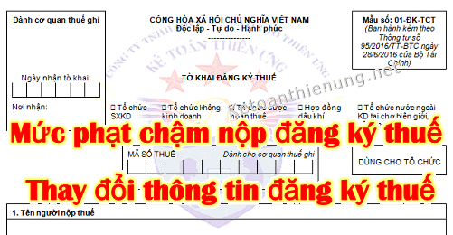

Quy định về mức phạt chậm nộp hồ sơ đăng ký thuế, chậm nộp thông báo thay đổi thông tin trong đăng ký thuế; Chậm nộp thông báo tạm ngừng kinh doanh, thông báo tiếp tục kinh doanh.
Căn cứ theo Điều 10 và Điều 11 Nghị định 125/2020/NĐ-CP ngày 19/10/2020 có hiệu lực từ ngày 05/12/2020 quy định cụ thể như sau:
I. Mức phạt hành vi vi phạm về thời hạn đăng ký thuế; thông báo tạm ngừng hoạt động kinh doanh; thông báo tiếp tục kinh doanh trước thời hạn:
1. Phạt cảnh cáo đối với hành vi đăng ký thuế; thông báo tạm ngừng hoạt động kinh doanh; thông báo tiếp tục kinh doanh trước thời hạn đã thông báo quá thời hạn quy định từ 01 ngày đến 10 ngày và có tình tiết giảm nhẹ.
1. Phạt cảnh cáo đối với hành vi đăng ký thuế; thông báo tạm ngừng hoạt động kinh doanh; thông báo tiếp tục kinh doanh trước thời hạn đã thông báo quá thời hạn quy định từ 01 ngày đến 10 ngày và có tình tiết giảm nhẹ.
Xem thêm: Tình tiết giảm nhẹ tình tiết tăng nặng
2. Phạt tiền từ 1.000.000 đồng đến 2.000.000 đồng đối với một trong các hành vi sau đây:
a) Đăng ký thuế; thông báo tiếp tục kinh doanh trước thời hạn đã thông báo quá thời hạn quy định từ 01 ngày đến 30 ngày, trừ trường hợp quy định tại khoản 1 Điều này;
b) Thông báo tạm ngừng hoạt động kinh doanh quá thời hạn quy định, trừ trường hợp quy định tại khoản 1 Điều này;
c) Không thông báo tạm ngừng hoạt động kinh doanh.
3. Phạt tiền từ 3.000.000 đồng đến 6.000.000 đồng đối với hành vi đăng ký thuế; thông báo tiếp tục kinh doanh trước thời hạn đã thông báo quá thời hạn quy định từ 31 đến 90 ngày.
4. Phạt tiền từ 6.000.000 đồng đến 10.000.000 đồng đối với một trong các hành vi sau đây:
a) Đăng ký thuế; thông báo tiếp tục hoạt động kinh doanh trước thời hạn đã thông báo quá thời hạn quy định từ 91 ngày trở lên;
b) Không thông báo tiếp tục hoạt động kinh doanh trước thời hạn đã thông báo nhưng không phát sinh số thuế phải nộp.
--------------------------------------------------------------------------------
II. Mức phạt hành vi vi phạm về thời hạn thông báo thay đổi thông tin trong đăng ký thuế:
1. Phạt cảnh cáo đối với một trong các hành vi sau đây:
a) Thông báo thay đổi nội dung đăng ký thuế quá thời hạn quy định từ 01 đến 30 ngày nhưng không làm thay đổi giấy chứng nhận đăng ký thuế hoặc thông báo mã số thuế mà có tình tiết giảm nhẹ;
b) Thông báo thay đổi nội dung đăng ký thuế quá thời hạn quy định từ 01 ngày đến 10 ngày làm thay đổi giấy chứng nhận đăng ký thuế hoặc thông báo mã số thuế mà có tình tiết giảm nhẹ.
2. Phạt tiền từ 500.000 đồng đến 1.000.000 đồng đối với hành vi thông báo thay đổi nội dung đăng ký thuế quá thời hạn quy định từ 01 đến 30 ngày nhưng không làm thay đổi giấy chứng nhận đăng ký thuế hoặc thông báo mã số thuế, trừ trường hợp xử phạt theo điểm a khoản 1 Điều này.
3. Phạt tiền từ 1.000.000 đồng đến 3.000.000 đồng đối với một trong các hành vi sau đây:
a) Thông báo thay đổi nội dung đăng ký thuế quá thời hạn quy định từ 31 đến 90 ngày nhưng không làm thay đổi giấy chứng nhận đăng ký thuế hoặc thông báo mã số thuế;
b) Thông báo thay đổi nội dung đăng ký thuế quá thời hạn quy định từ 01 ngày đến 30 ngày làm thay đổi giấy chứng nhận đăng ký thuế hoặc thông báo mã số thuế, trừ trường hợp quy định tại điểm b khoản 1 Điều này.
4. Phạt tiền từ 3.000.000 đồng đến 5.000.000 đồng đối với một trong các hành vi sau đây:
a) Thông báo thay đổi nội dung đăng ký thuế quá thời hạn quy định từ 91 ngày trở lên nhưng không làm thay đổi giấy chứng nhận đăng ký thuế hoặc thông báo mã số thuế;
b) Thông báo thay đổi nội dung đăng ký thuế quá thời hạn quy định từ 31 đến 90 ngày làm thay đổi giấy chứng nhận đăng ký thuế hoặc thông báo mã số thuế.
5. Phạt tiền từ 5.000.000 đồng đến 7.000.000 đồng đối với một trong các hành vi sau đây:
a) Thông báo thay đổi nội dung đăng ký thuế quá thời hạn quy định từ 91 ngày trở lên làm thay đổi giấy chứng nhận đăng ký thuế hoặc thông báo mã số thuế;
b) Không thông báo thay đổi thông tin trong hồ sơ đăng ký thuế.
6. Quy định tại Điều này không áp dụng đối với trường hợp sau đây:
a) Cá nhân không kinh doanh đã được cấp mã số thuế thu nhập cá nhân chậm thay đổi thông tin về chứng minh nhân dân khi được cấp thẻ căn cước công dân;
b) Cơ quan chi trả thu nhập chậm thông báo thay đổi thông tin về chứng minh nhân dân khi người nộp thuế thu nhập cá nhân là các cá nhân ủy quyền quyết toán thuế thu nhập cá nhân được cấp thẻ căn cước công dân;
c) Thông báo thay đổi thông tin trên hồ sơ đăng ký thuế về địa chỉ người nộp thuế quá thời hạn quy định do thay đổi địa giới hành chính theo Nghị quyết của Ủy ban thường vụ Quốc hội hoặc Nghị quyết của Quốc hội.
7. Biện pháp khắc phục hậu quả: Buộc nộp hồ sơ thay đổi nội dung đăng ký thuế đối với hành vi quy định tại điểm b khoản 5 Điều này.
1. Phạt cảnh cáo đối với một trong các hành vi sau đây:
a) Thông báo thay đổi nội dung đăng ký thuế quá thời hạn quy định từ 01 đến 30 ngày nhưng không làm thay đổi giấy chứng nhận đăng ký thuế hoặc thông báo mã số thuế mà có tình tiết giảm nhẹ;
b) Thông báo thay đổi nội dung đăng ký thuế quá thời hạn quy định từ 01 ngày đến 10 ngày làm thay đổi giấy chứng nhận đăng ký thuế hoặc thông báo mã số thuế mà có tình tiết giảm nhẹ.
2. Phạt tiền từ 500.000 đồng đến 1.000.000 đồng đối với hành vi thông báo thay đổi nội dung đăng ký thuế quá thời hạn quy định từ 01 đến 30 ngày nhưng không làm thay đổi giấy chứng nhận đăng ký thuế hoặc thông báo mã số thuế, trừ trường hợp xử phạt theo điểm a khoản 1 Điều này.
3. Phạt tiền từ 1.000.000 đồng đến 3.000.000 đồng đối với một trong các hành vi sau đây:
a) Thông báo thay đổi nội dung đăng ký thuế quá thời hạn quy định từ 31 đến 90 ngày nhưng không làm thay đổi giấy chứng nhận đăng ký thuế hoặc thông báo mã số thuế;
b) Thông báo thay đổi nội dung đăng ký thuế quá thời hạn quy định từ 01 ngày đến 30 ngày làm thay đổi giấy chứng nhận đăng ký thuế hoặc thông báo mã số thuế, trừ trường hợp quy định tại điểm b khoản 1 Điều này.
4. Phạt tiền từ 3.000.000 đồng đến 5.000.000 đồng đối với một trong các hành vi sau đây:
a) Thông báo thay đổi nội dung đăng ký thuế quá thời hạn quy định từ 91 ngày trở lên nhưng không làm thay đổi giấy chứng nhận đăng ký thuế hoặc thông báo mã số thuế;
b) Thông báo thay đổi nội dung đăng ký thuế quá thời hạn quy định từ 31 đến 90 ngày làm thay đổi giấy chứng nhận đăng ký thuế hoặc thông báo mã số thuế.
5. Phạt tiền từ 5.000.000 đồng đến 7.000.000 đồng đối với một trong các hành vi sau đây:
a) Thông báo thay đổi nội dung đăng ký thuế quá thời hạn quy định từ 91 ngày trở lên làm thay đổi giấy chứng nhận đăng ký thuế hoặc thông báo mã số thuế;
b) Không thông báo thay đổi thông tin trong hồ sơ đăng ký thuế.
6. Quy định tại Điều này không áp dụng đối với trường hợp sau đây:
a) Cá nhân không kinh doanh đã được cấp mã số thuế thu nhập cá nhân chậm thay đổi thông tin về chứng minh nhân dân khi được cấp thẻ căn cước công dân;
b) Cơ quan chi trả thu nhập chậm thông báo thay đổi thông tin về chứng minh nhân dân khi người nộp thuế thu nhập cá nhân là các cá nhân ủy quyền quyết toán thuế thu nhập cá nhân được cấp thẻ căn cước công dân;
c) Thông báo thay đổi thông tin trên hồ sơ đăng ký thuế về địa chỉ người nộp thuế quá thời hạn quy định do thay đổi địa giới hành chính theo Nghị quyết của Ủy ban thường vụ Quốc hội hoặc Nghị quyết của Quốc hội.
7. Biện pháp khắc phục hậu quả: Buộc nộp hồ sơ thay đổi nội dung đăng ký thuế đối với hành vi quy định tại điểm b khoản 5 Điều này.
_________________________________________________
